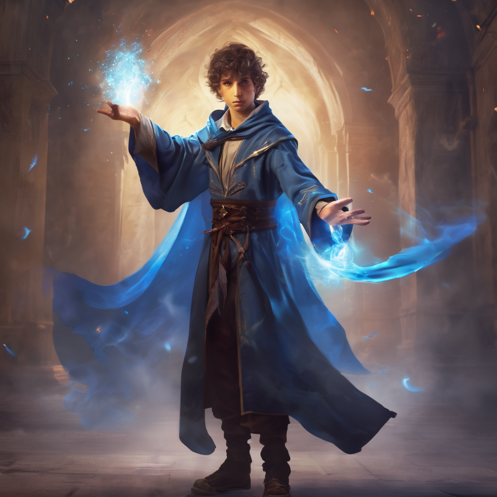
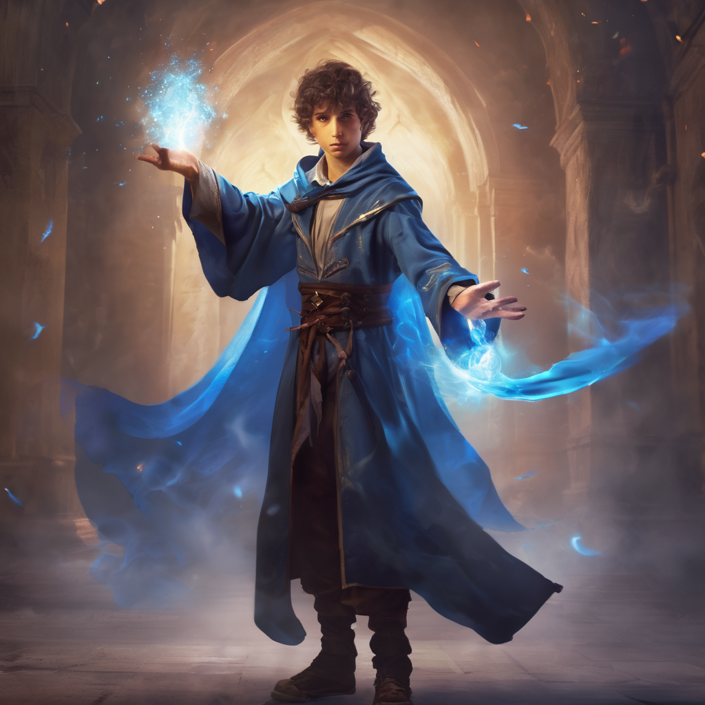

The final portal led them deep into the ocean’s heart. Here, in the Sunken Citadel, coral palaces crumbled, and merfolk sang mournful ballads. The Scepter lay guarded by Nerida, the ancient sea sorceress. The trio plunged through azure depths, their lungs aching for air. The water whispered secrets—of drowned kingdoms, forgotten gods, and sunken dreams. Seraphina’s sword glimmered, its blade etched with runes. Archibald clutched his quill, ink swirling like bioluminescent jellyfish. Evie’s sea-green gown billowed, and her eyes held the ocean’s mysteries. In the heart of the Sunken Citadel, Nerida awaited—a vision of salt and sorrow. Her hair flowed like kelp, and her eyes mirrored the abyss. “Welcome,” she sang, her voice weaving currents. “Seekers of the Scepter, why do you disturb the deep?” Seraphina stepped forward. “To restore balance,” she declared. “To mend realms torn asunder.” Nerida’s laughter echoed through drowned halls. “Balance? Mortals know nothing of balance. But prove your worth. Retrieve the Tideheart Pearl from the Kraken’s lair.” The Kraken’s lair lay within a vortex—a tempest of rage and hunger. Its tentacles, thicker than ship masts, coiled around the pearl. Evie brewed a potion—a blend of moonflower petals and seafoam. “Drink,” she told her companions. “Breathe the abyss.” Their eyes glowed, and they dove into the maelstrom, where time twisted like seaweed. The Kraken’s eye opened—a whirlpool of ancient rage. “Answer my riddle,” it thundered. “Or be devoured.” Archibald’s quill trembled. “Speak, beast.” The Kraken’s voice echoed: What is the beginning of eternity, The end of time and space, The beginning of every end, And the end of every place? Seraphina grinned. “The letter ‘E.’” The Kraken’s laughter shook the abyss. “Clever mortals. Take the pearl and go.” Back in the Sunken Citadel, Nerida awaited. Her eyes flickered—a storm brewing. “The pearl,” she demanded. Evie hesitated. “Why?” Nerida’s form wavered, scales shimmering. “Power,” she hissed. “To rule both sea and sky.” Seraphina drew her sword. “We seek balance, not dominion.” Nerida’s wrath surged. “Then perish!” 2. The Battle Beneath the Abyss: Spells clashed—Nerida’s watery tendrils against Seraphina’s blade. Archibald’s quill wrote incantations, and Evie’s potions swirled like whirlpools. The sea churned, and lightning forked. Coral crumbled, and ancient statues wept. Seraphina’s courage clashed with Nerida’s rage. Archibald’s wit countered her sorcery. Evie’s caution shielded them all. The Scepter pulsed—a beacon of unity. 3. The Sacrifice: Evie whispered to the pearl. “Balance, remember?” The pearl glowed, and Nerida’s form fractured. She screamed—a siren’s lament. “Take it,” Nerida gasped. “Restore what was lost.” Seraphina thrust the pearl into the Scepter, and realms merged—a tapestry woven anew. Emerald Hollow rejoiced as magic flowed. The three friends returned, forever changed. Their attire bore symbols of their journey: a sword, a quill, and a seashell. And so, in the 16th century, the Chronicles of Aetherrealm began—a tale of courage, intellect, and vigilance, etched across realms and whispered by winds. The Resonant Nexus: The trio, having triumphed over the challenges of the past realms, now stands before the enigmatic Resonant Nexus. The air hums with anticipation as they take in the ethereal landscape stretching before them. Threads of light and shadow intertwine, reflecting the myriad dimensions they've traversed. Seraphina, ever the vigilant leader, assesses the Nexus with a keen eye, her sword poised for action. Archibald's scholarly curiosity is piqued, theories swirling in his mind as he adjusts his spectacles. Evie, sensitive to the subtle energies around her, feels a tingle down her spine, recognizing the latent power within this convergence of worlds. As they step forward, guided by the Keeper of Echoes, they feel a sense of reverence for this nexus, understanding its pivotal role in the fabric of existence. The Keeper of Echoes: Approaching the central figure shrouded in starlight, the trio is greeted by the enigmatic Keeper of Echoes. Their presence radiates ancient wisdom, and their eyes hold the knowledge of eons past. "Welcome, travelers," the Keeper's voice reverberates through the Nexus, resonating with the echoes of countless timelines. "You have journeyed far and faced trials that test the very essence of your being." Seraphina nods, her determination unwavering. "We seek to restore balance to the realms, to mend the fractures that threaten existence itself." The Keeper's gaze lingers on each of them, as if peering into their souls. "To prove yourselves worthy, you must delve into the echoes of the past and uncover the truths hidden within." Echoes of Emerald Hollow: Transported back to the familiar yet altered landscape of Emerald Hollow, the trio finds themselves amidst a realm in flux. The once vibrant flora now bears traces of corruption, and the whispers of the dandelions carry a mournful lament. Evie's heart sinks at the sight, her connection to the natural world urging her to seek out the source of this disturbance. Archibald's analytical mind races as he observes the changes, searching for clues amidst the shifting scenery. Seraphina's resolve strengthens, determined to restore the tranquility of their beloved Hollow. As they traverse the forest, they encounter spectral manifestations of past events, each holding a fragment of forgotten memory. These echoes speak of ancient alliances and betrayals, hinting at the deeper mysteries concealed within Emerald Hollow's history. Echoes of Celestia: Their next journey leads them to the celestial realms of Celestia, where once-grand palaces now stand as monuments to faded glory. The immortal courtiers, once luminous with celestial grace, now drift as ethereal shades, their essence dimmed by the shadows of discord. Archibald's heart aches at the sight of such splendor tarnished, his scholarly curiosity fueled by the desire to uncover the cause of this celestial malaise. Seraphina's determination is unwavering as she seeks out answers amidst the cosmic ruins, her sword a beacon of hope in the darkness. Evie's connection to the celestial energies guides her steps, her intuition leading them towards the heart of the celestial upheaval. Lysander, the Eternal Bard, appears before them, his harp silent and his eyes haunted by the echoes of a bygone era. "The balance has been disrupted," he says, his voice heavy with sorrow. "The echoes of discord reverberate through the celestial realms, threatening to unravel the very fabric of existence." Echoes of the Abyss: Their final journey takes them to the depths of the ocean, where the ruins of the Sunken Citadel bear witness to the passage of time. Merfolk sing mournful dirges, their voices a haunting melody that echoes through the underwater labyrinth. Seraphina's resolve is unyielding as she navigates the submerged halls, her determination to restore balance driving her forward. Archibald's keen intellect is put to the test as he deciphers the cryptic messages hidden within the oceanic depths. Evie's connection to the ocean's currents guides their path, her empathy for the merfolk fueling their quest to uncover the source of the aquatic turmoil. Nerida's spirit emerges from the depths, her form shimmering with unshed tears. "The sea mourns for what once was," she whispers, her voice a melancholy echo of the past. "But hope still lingers in the currents, waiting to be awakened." The Convergence: Armed with the echoes of the past, the trio returns to the Resonant Nexus, their resolve strengthened by the trials they've faced. As they weave together the threads of memory and truth, the Nexus begins to resonate with the power of remembrance. Seraphina raises her sword high, its blade pulsating with ethereal light. "For Emerald Hollow, for Celestia, for the Abyss," she declares, her voice echoing through the Nexus like a clarion call to arms. Archibald's quill dances across parchment, his words weaving a tapestry of wisdom and insight. "May the echoes guide us towards a brighter future," he intones, his voice a beacon of hope amidst the darkness. Evie clasps the seashell pendant around her neck, feeling the pulse of the ocean's depths within her. "Together, we are unstoppable," she vows, her spirit as unyielding as the tides that ebb and flow. The Restoration: As the trio merges their strengths, a surge of energy sweeps through the Nexus, cascading across dimensions like a wave of renewal. The echoes of the past bloom with newfound life, their resonance echoing through the fabric of existence. Emerald Hollow blossoms with renewed vitality, its flora and fauna thriving once more in the wake of their intervention. Celestia regains its former glory, its celestial palaces sparkling with renewed brilliance as the immortal courtiers dance beneath the starlit sky. And in the depths of the ocean, the ruins of the Sunken Citadel rise from the abyss, their coral palaces gleaming with the promise of resurgence. The Epilogue: With the realms restored to balance, the trio stands at the threshold of the Resonant Nexus once more, their spirits light with victory and their hearts filled with hope. As they prepare to embark on their next journey, they carry with them the echoes of the past, a reminder of the interconnectedness of all things and the resilience of the human spirit. The Keeper of Echoes nods in approval, their form dissolving into stardust as they impart one final piece of wisdom. "You have fulfilled your destiny," they say, their voice a gentle breeze that stirs the threads of the Nexus. "But remember, the echoes of the past are the foundation of the future, guiding you towards the paths yet untold." And so, with one final glance at the shimmering threads of the Resonant Nexus, Seraphina, Archibald, and Evie step forward, their journey far from over but their spirits unshakeable as they face the adventures that await beyond the threshold of the Nexus. By integrating the echoes of the past with the present journey, the trio not only confronts the challenges ahead but also gains a deeper understanding of the interconnectedness of their quest and the resonance of the realms they traverse. This expansion adds coherence and depth to "The Chronicles of Aetherrealm," enriching the narrative with new layers of meaning and significance.

 
